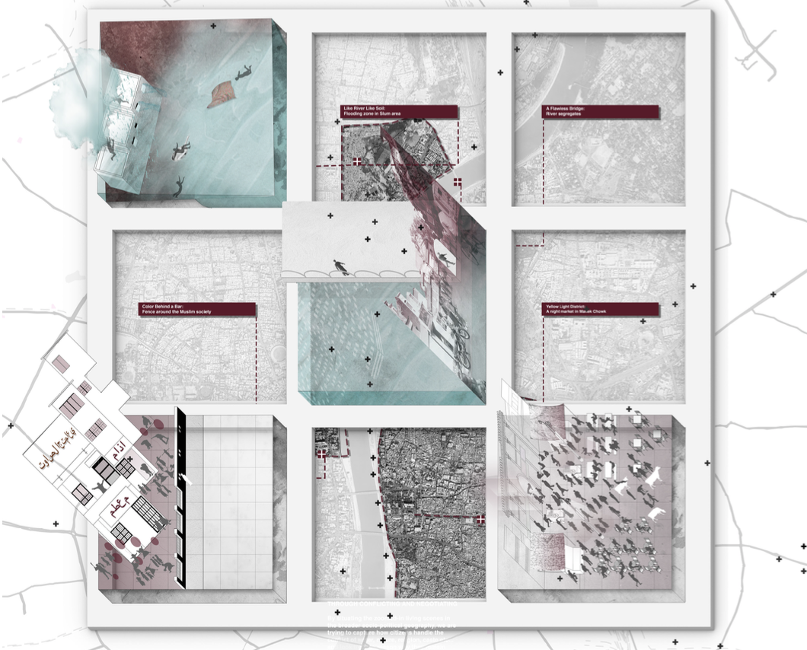

TECH
科技
ARCH
建筑
Y.LIU
WORD
写作
Political Lens of the Memorials 甘地纪念馆
Power and Architecture 建筑语义研究 ｜ 20S
ARQ ｜ 21F
Urban Semiotics in DC 华盛顿广场空间语义
Urban Semiotic 城市语义 ｜ 20F
fORA on the Urban The Venice Architecture Biennale｜ 21F
Young Land Occupations and the Failure of Housing Policy in Brazil 巴西住房政策与没有建筑师的建筑
Housing Policy 住房政策 ｜ 20S
Housing Policy Debate ｜ 21S
Decarbonization and Synergetic Industrial Design 低碳化工业区设计
Climate Resilience 可持续发展 ｜ 20F
Harvard Zofnass｜ 21F